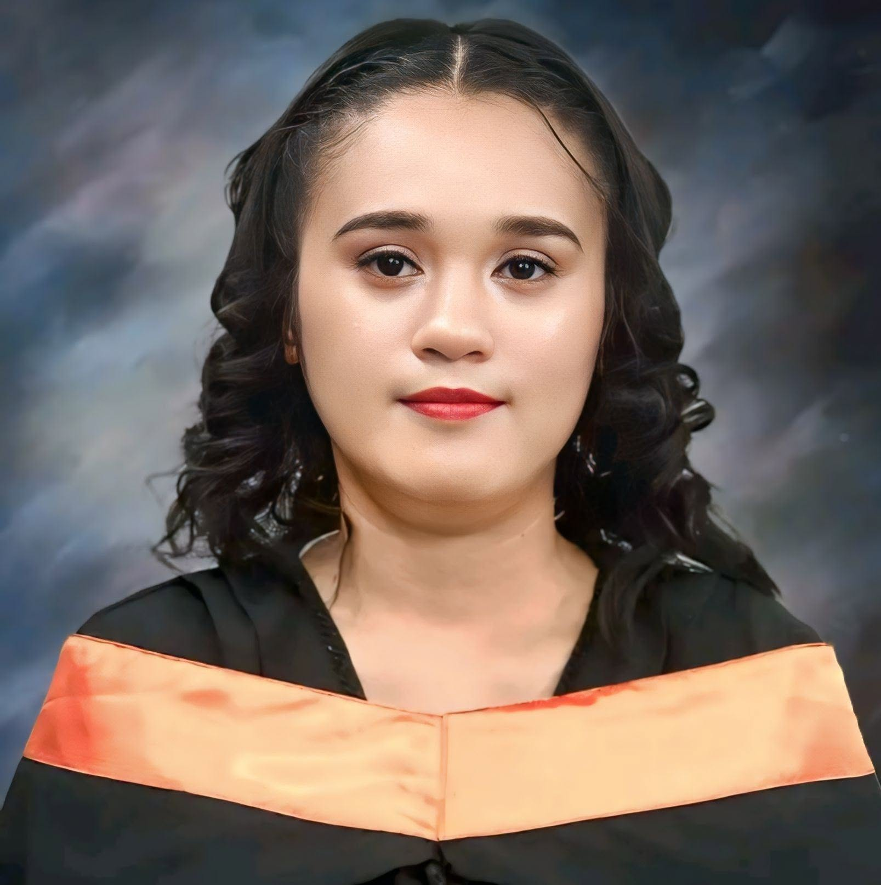

Objective Statement
Computer Engineering graduate with a strong passion for technology and continuous learning in tech-related skills.
Skilled in programming, web development (HTML, CSS), CAD design (AutoCAD, SketchUp), and electronics prototyping tools.
Eager to apply technical knowledge and problem-solving abilities to contribute effectively in a technology-driven environment.
Education
College
Bestlink Collage of the Philippines
Bachelor of Science in Computer Engineering
(2020 - 2025)
Senior High School
Commonwealth High School
Science Technology Engineering and Mathematics (STEM)
(2018 - 2020)
Junior High School
- Prince Nikki School Inc. (2017-2018)
- Bagong Silangan High School (2015 - 2017)
- Himalayan Christian School of Everlasting, Inc. (2014 - 2015)
Elementary
- Himalayan Christian School of Everlasting (2007 - 2014)
Work Experience
- Fronline Sales Associate
- Sales Secretary at Gran Toro Oro responsible for processing agents sales orders and ensuring they are accurately managed.
Monitored order progress to guarantee timely processing and kept agents informed of the status of their customers orders.
Maintained clear communication and coordination between agents and internal teams to support efficient order fulfillment.
- Gran Toro Oro (GTO) - November 2025 - May 2026
- Internship
- I.T. Department
- Awards Central Philippines (ACP) - (January 2025 - May 2025 )
Sales
- Sales clerk at Gersel Hardware who process and take the order of the costumer.
- Gersel Hardware - June 2023 - January 2024
Skills
- Proficient in Microsoft 365 (Word, Excel, & PowerPoint)
- Programming skills; knowledgeable in HTML and CSS
- Experienced with Smartsheet for project management and workflow tracking
- Electrical/electronic circuit understanding
-
Proficient in SketchUp and AutoCAD for 2D/3D drafting and modeling.
-
Experienced with Fritzing and Tinkercad for electronic circuit design and prototyping
Organization
- Computer Engineering Department Officer
- 3rd Year Class Mayor - June 2023 - May 2024
- Sports Club of Computer Engineering Department
Awards
- Best Intern
- Awards Central Philippines (ACP) - May 2025
Eligibility
- Civil Service Passer - March 2026